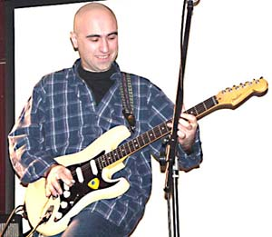

Арсен Шомахов и "Регтайм" представят BLUES.RU на International Blues Challenge 2005 в Мемфисе

 The Blues Foundation (blues.org) -
главная в мире некоммерческая блюзовая организация, известна не только ежегодным
присуждением премии W.C.Handy,
но и конкурсом International
Blues Challenge, который проходит каждый год в начале февраля. В конкурсе
принимают участие блюзовые группы и исполнители из США и со всего мира, не имеющие
коммерческих контрактов с крупными звукозаписывающими компаниями. Участников IBC
выдвигают блюзовые сообщества-партнеры Blues Foundation, посылая на них победителей
региональных блюзовых конкурсов или же музыкантов, заслуживающих участия в IBC по
каким-либо соображениям.
The Blues Foundation (blues.org) -
главная в мире некоммерческая блюзовая организация, известна не только ежегодным
присуждением премии W.C.Handy,
но и конкурсом International
Blues Challenge, который проходит каждый год в начале февраля. В конкурсе
принимают участие блюзовые группы и исполнители из США и со всего мира, не имеющие
коммерческих контрактов с крупными звукозаписывающими компаниями. Участников IBC
выдвигают блюзовые сообщества-партнеры Blues Foundation, посылая на них победителей
региональных блюзовых конкурсов или же музыкантов, заслуживающих участия в IBC по
каким-либо соображениям.
 Блюзовое сообщество, связанное с сайтом blues.ru,
известное также своей активной деятельностью за пределами интернета, впервые в истории
выдвинуло своего делегата в Мемфис представлять отечественный блюз. В этом году на IBC
отправился Арсен Шомахов и группа
Регтайм. Прошедшие за последний год
блюзовые фестивали, организованные blues.ru, показали, что Регтайм на сегодня -
одна из наиболее интересных отечественных блюзовых групп, исполняющая на своих
ярких запоминающихся концертах авторскую программу, которая постоянно обновляется
за счет новых песен Арсена Шомахова. Две записанные с 2002 года пластинки и
демо-записи с готовящегося к выпуску третьего диска являются одними из лучших
российских блюзовых записей, которые регулярно звучат в эфире нескольких зарубежных
блюзовых радиостанций.
Блюзовое сообщество, связанное с сайтом blues.ru,
известное также своей активной деятельностью за пределами интернета, впервые в истории
выдвинуло своего делегата в Мемфис представлять отечественный блюз. В этом году на IBC
отправился Арсен Шомахов и группа
Регтайм. Прошедшие за последний год
блюзовые фестивали, организованные blues.ru, показали, что Регтайм на сегодня -
одна из наиболее интересных отечественных блюзовых групп, исполняющая на своих
ярких запоминающихся концертах авторскую программу, которая постоянно обновляется
за счет новых песен Арсена Шомахова. Две записанные с 2002 года пластинки и
демо-записи с готовящегося к выпуску третьего диска являются одними из лучших
российских блюзовых записей, которые регулярно звучат в эфире нескольких зарубежных
блюзовых радиостанций.
К чести группы стоит отметить, что Арсен Шомахов, Аслан Жантуев и Бек Мамишев
приложили немало усилий к тому, чтобы эта поездка состоялась. До последнего момента
не было уверенности, что все будет в порядке. Получив поддержку blues.ru, Регтайм
подал документы на участие в последний день регистрации, после чего прошел сложную
процедуру получения американской визы, включая поездку на собеседование за 2000
километров в Москву. После этого удалось найти спонсоров, оплативших поездку,
одним из которых стал сайт BLUES.RU. За двое суток до вылета в США Регтайм отправился
на автобусе в столицу, но как раз в этот день снегом полностью завалило шоссе из
Ростова в Москву, и весь транспорт встал в трехдневной пробке. По счастью Арсен
с Регтаймом смогли пересесть на поезд и в результате прибыли в аэропорт с запасом
всего в несколько часов. Хорошо все, что хорошо кончается! Сейчас "регтаймы" уже
в Мемфисе, и после 3-х суток дороги набираются сил перед открытием IBC, которое
состоится в четверг, 3-го февраля. Искренне пожелаем им успеха!
8-го февраля, во вторник по дороге из Мемфиса в Нальчик, прямо с самолета
Регтайм даст единственный концерт в Москве в клубе
Дом у Дороги в 20:30, где мы будем
чествовать делегатов, задавать вопросы и раздавать жевачку, привезенную прямо из
Америки. После блюз.ру планирует разместить подробный отчет о поездке.
Ссылки по теме: